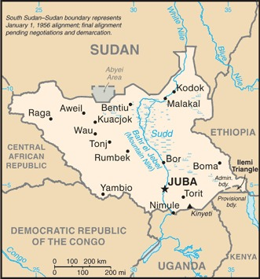
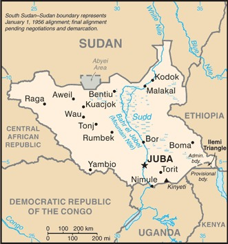

-
Introduction :: South Sudan
-
Background:
British explorer Samuel BAKER established the colony of Equatoria in 1870, in the name of the Ottoman Khedive of Egypt who claimed the territory. Headquartered in Gondokoro (near modern day Juba), Equatoria in theory composed most of what is now South Sudan. After being cut off from colonial administration during the Mahdist War from 1885-1898, Equatoria was made a state under the Anglo-Egyptian condominium in 1899. It was largely left to itself over the following decades, but Christian missionaries converted much of the population and facilitated the spread of English, rather than Arabic. Equatoria was ruled by British colonial administrators separately from what is now Sudan until the two colonies were combined at the 1947 Juba Conference, as part of British plans to prepare the region for independence. When Sudan gained its independence in 1956, it was with the understanding that the southerners would be able to participate fully in the political system. When the Arab Khartoum government reneged on its promises, a mutiny began that led to two prolonged periods of conflict (1955-1972 and 1983-2005) in which perhaps 2.5 million people died - mostly civilians - due to starvation and drought. Ongoing peace talks finally resulted in a Comprehensive Peace Agreement, signed in January 2005. As part of this agreement, the south was granted a six-year period of autonomy to be followed by a referendum on final status. The result of this referendum, held in January 2011, was a vote of 98% in favor of secession.
Since independence on 9 July 2011, South Sudan has struggled with good governance and nation building and has attempted to control opposition forces operating in its territory. Economic conditions have deteriorated since January 2012 when the government decided to shut down oil production following bilateral disagreements with Sudan. In December 2013, conflict between government and opposition forces killed tens of thousands and led to a dire humanitarian crisis with millions of South Sudanese displaced and food insecure. The warring parties signed a peace agreement in August 2015 that created a transitional government of national unity in April 2016. However, in July 2016, fighting broke out in Juba between the two principal signatories, plunging the country back into conflict. A "revitalized" peace agreement was signed in September 2018 ending the fighting. Under the agreement, the government and various rebel groups agreed that the sides would form a unified national army and create a transitional government by May 2019. The agreement was extended until November 2019 and then subsequently to February 2020. However, implementation has been stalled, in part by a failure to agree on the country's internal political boundaries. -
Geography :: South Sudan
-
Location:East-Central Africa; south of Sudan, north of Uganda and Kenya, west of EthiopiaGeographic coordinates:8 00 N, 30 00 EMap references:AfricaArea:total: 644,329 sq kmland: NAwater: NAcountry comparison to the world: 43Area - comparative:more than four times the size of Georgia; slightly smaller than TexasArea comparison map:
 The World Factbook Field Image ModalAfrica :: South Sudan Print
The World Factbook Field Image ModalAfrica :: South Sudan Print Image Description
Image Descriptionmore than four times the size of Georgia; slightly smaller than Texas
Land boundaries:total: 6,018 kmborder countries (6): Central African Republic 1055 km, Democratic Republic of the Congo 714 km, Ethiopia 1299 km, Kenya 317 km, Sudan 2158 km, Uganda 475 kmnote: South Sudan-Sudan boundary represents 1 January 1956 alignment; final alignment pending negotiations and demarcation; final sovereignty status of Abyei Area pending negotiations between South Sudan and Sudan
Coastline:0 km (landlocked)Maritime claims:none (landlocked)Climate:hot with seasonal rainfall influenced by the annual shift of the Inter-Tropical Convergence Zone; rainfall heaviest in upland areas of the south and diminishes to the northTerrain:plains in the north and center rise to southern highlands along the border with Uganda and Kenya; the White Nile, flowing north out of the uplands of Central Africa, is the major geographic feature of the country; The Sudd (a name derived from floating vegetation that hinders navigation) is a large swampy area of more than 100,000 sq km fed by the waters of the White Nile that dominates the center of the countryElevation:lowest point: White Nile 381 mhighest point: Kinyeti 3,187 mNatural resources:hydropower, fertile agricultural land, gold, diamonds, petroleum, hardwoods, limestone, iron ore, copper, chromium ore, zinc, tungsten, mica, silverLand use:agricultural land: 100%arable land: 0% / permanent crops: 0% / permanent pasture: 100%forest: 0%other: 0%Irrigated land:1,000 sq km (2012)Population distribution:clusters found in urban areas, particularly in the western interior and around the White Nile as shown in this population distribution mapEnvironment - current issues:water pollution; inadequate supplies of potable water; wildlife conservation and loss of biodiversity; deforestation; soil erosion; desertification; periodic droughtGeography - note:landlocked; The Sudd is a vast swamp in the north central region of South Sudan, formed by the White Nile, its size is variable but can reach some 15% of the country's total area during the rainy season; it is one of the world's largest wetlands -
People and Society :: South Sudan
-
Population:10,561,244 (July 2020 est.)country comparison to the world: 87Nationality:noun: South Sudanese (singular and plural)adjective: South SudaneseEthnic groups:Dinka (Jieng) 35.8%, Nuer (Naath) 15.6%, Shilluk (Chollo), Azande, Bari, Kakwa, Kuku, Murle, Mandari, Didinga, Ndogo, Bviri, Lndi, Anuak, Bongo, Lango, Dungotona, Acholi, Baka, Fertit (2011 est.)Languages:English (official), Arabic (includes Juba and Sudanese variants), regional languages include Dinka, Nuer, Bari, Zande, ShillukReligions:animist, Christian, MuslimDemographic profile:
South Sudan, independent from Sudan since July 2011 after decades of civil war, is one of the world’s poorest countries and ranks among the lowest in many socioeconomic categories. Problems are exacerbated by ongoing tensions with Sudan over oil revenues and land borders, fighting between government forces and rebel groups, and inter-communal violence. Most of the population lives off of farming, while smaller numbers rely on animal husbandry; more than 80% of the populace lives in rural areas. The maternal mortality rate is among the world’s highest for a variety of reasons, including a shortage of health care workers, facilities, and supplies; poor roads and a lack of transport; and cultural beliefs that prevent women from seeking obstetric care. Most women marry and start having children early, giving birth at home with the assistance of traditional birth attendants, who are unable to handle complications.
Educational attainment is extremely poor due to the lack of schools, qualified teachers, and materials. Less than a third of the population is literate (the rate is even lower among women), and half live below the poverty line. Teachers and students are also struggling with the switch from Arabic to English as the language of instruction. Many adults missed out on schooling because of warfare and displacement.
Almost 2 million South Sudanese have sought refuge in neighboring countries since the current conflict began in December 2013. Another 1.96 million South Sudanese are internally displaced as of August 2017. Despite South Sudan’s instability and lack of infrastructure and social services, more than 240,000 people have fled to South Sudan to escape fighting in Sudan.
Age structure:0-14 years: 41.58% (male 2,238,534/female 2,152,685)15-24 years: 21.28% (male 1,153,108/female 1,094,568)25-54 years: 30.67% (male 1,662,409/female 1,577,062)55-64 years: 3.93% (male 228,875/female 186,571)65 years and over: 2.53% (male 153,502/female 113,930) (2020 est.)population pyramid: The World Factbook Field Image ModalAfrica :: South Sudan Print
The World Factbook Field Image ModalAfrica :: South Sudan Print Image DescriptionThis is the population pyramid for South Sudan. A population pyramid illustrates the age and sex structure of a country's population and may provide insights about political and social stability, as well as economic development. The population is distributed along the horizontal axis, with males shown on the left and females on the right. The male and female populations are broken down into 5-year age groups represented as horizontal bars along the vertical axis, with the youngest age groups at the bottom and the oldest at the top. The shape of the population pyramid gradually evolves over time based on fertility, mortality, and international migration trends.
Image DescriptionThis is the population pyramid for South Sudan. A population pyramid illustrates the age and sex structure of a country's population and may provide insights about political and social stability, as well as economic development. The population is distributed along the horizontal axis, with males shown on the left and females on the right. The male and female populations are broken down into 5-year age groups represented as horizontal bars along the vertical axis, with the youngest age groups at the bottom and the oldest at the top. The shape of the population pyramid gradually evolves over time based on fertility, mortality, and international migration trends.
For additional information, please see the entry for Population pyramid on the Definitions and Notes page under the References tab.Dependency ratios:total dependency ratio: 80.8youth dependency ratio: 74.7elderly dependency ratio: 6.1potential support ratio: 16.5 (2020 est.)Median age:total: 18.6 yearsmale: 18.9 yearsfemale: 18.3 years (2020 est.)country comparison to the world: 208Population growth rate:2.7% (2020 est.)country comparison to the world: 16Birth rate:38.8 births/1,000 population (2020 est.)country comparison to the world: 10Death rate:11.4 deaths/1,000 population (2020 est.)country comparison to the world: 20Net migration rate:0.2 migrant(s)/1,000 population (2020 est.)country comparison to the world: 72Population distribution:clusters found in urban areas, particularly in the western interior and around the White Nile as shown in this population distribution mapUrbanization:urban population: 20.2% of total population (2020)rate of urbanization: 4.1% annual rate of change (2015-20 est.)total population growth rate v. urban population growth rate, 2000-2030: PDFMajor urban areas - population:403,000 JUBA (capital) (2020)Sex ratio:at birth: 1.05 male(s)/female0-14 years: 1.04 male(s)/female15-24 years: 1.05 male(s)/female25-54 years: 1.05 male(s)/female55-64 years: 1.23 male(s)/female65 years and over: 1.35 male(s)/femaletotal population: 1.06 male(s)/female (2020 est.)Maternal mortality rate:1,150 deaths/100,000 live births (2017 est.)country comparison to the world: 1Infant mortality rate:total: 69.9 deaths/1,000 live birthsmale: 76 deaths/1,000 live birthsfemale: 63.5 deaths/1,000 live births (2020 est.)country comparison to the world: 4Life expectancy at birth:total population: 55.5 yearsmale: 54.6 yearsfemale: 56.5 years (2020 est.)country comparison to the world: 222Total fertility rate:5.54 children born/woman (2020 est.)country comparison to the world: 6Contraceptive prevalence rate:4% (2010)Drinking water source:improved: urban: 85.2% of populationrural: 71.7% of populationtotal: 74.3% of populationunimproved: urban: 14.8% of populationrural: 28.3% of populationtotal: 25.7% of population (2017 est.)Current Health Expenditure:9.8% (2017)Sanitation facility access:improved: urban: 54.1% of populationrural: 10.7% of populationtotal: 19.1% of populationunimproved: urban: 45.9% of populationrural: 89.3% of populationtotal: 80.9% of population (2017 est.)HIV/AIDS - adult prevalence rate:2.4% (2019 est.)country comparison to the world: 21HIV/AIDS - people living with HIV/AIDS:190,000 (2019 est.)country comparison to the world: 34HIV/AIDS - deaths:9,100 (2019 est.)country comparison to the world: 20Major infectious diseases:degree of risk: very high (2020)food or waterborne diseases: bacterial and protozoal diarrhea, hepatitis A and E, and typhoid fevervectorborne diseases: malaria, dengue fever, Trypanosomiasis-Gambiense (African sleeping sickness)water contact diseases: schistosomiasisanimal contact diseases: rabiesrespiratory diseases: meningococcal meningitisObesity - adult prevalence rate:6.6% (2014)country comparison to the world: 165Children under the age of 5 years underweight:27.7% (2010)country comparison to the world: 9Education expenditures:1.5% of GDP (2016)country comparison to the world: 168Literacy:definition: age 15 and over can read and writetotal population: 34.5%male: 40.3%female: 28.9% (2018)Unemployment, youth ages 15-24:total: 38.6%male: 39.5%female: 37.4% (2017 est.)country comparison to the world: 14 -
Government :: South Sudan
-
Country name:conventional long form: Republic of South Sudanconventional short form: South Sudanetymology: self-descriptive name from the country's former position within Sudan prior to independence; the name "Sudan" derives from the Arabic "bilad-as-sudan" meaning "Land of the Black [peoples]"Government type:presidential republicCapital:name: Jubageographic coordinates: 04 51 N, 31 37 Etime difference: UTC+3 (8 hours ahead of Washington, DC, during Standard Time)etymology: the name derives from Djouba, another name for the Bari people of South SudanAdministrative divisions:10 states; Central Equatoria, Eastern Equatoria, Jonglei, Lakes, Northern Bahr el Ghazal, Unity, Upper Nile, Warrap, Western Bahr el Ghazal, Western Equatoria; note - in 2015, the creation of 28 new states was announced and in 2017 four additional; following the February 2020 peace agreement, the country was reportedly again reorganized into the 10 original states, plus 2 administrative areas, Pibor and Ruweng, and 1 special administrative status area, Abyei; this latest administrative revision has not yet been vetted by the US Board on Geographic NamesIndependence:9 July 2011 (from Sudan)National holiday:Independence Day, 9 July (2011)Constitution:history: previous 2005 (preindependence); latest signed 7 July 2011, effective 9 July 2011 (Transitional Constitution of the Republic of South Sudan, 2011)amendments: proposed by the National Legislature or by the president of the republic; passage requires submission of the proposal to the Legislature at least one month prior to consideration, approval by at least two-thirds majority vote in both houses of the Legislature, and assent of the president; amended 2013, 2015, 2018Citizenship:citizenship by birth: nocitizenship by descent only: at least one parent must be a citizen of South Sudandual citizenship recognized: yesresidency requirement for naturalization: 10 yearsSuffrage:18 years of age; universalExecutive branch:chief of state: President Salva KIIR Mayardit (since 9 July 2011); First Vice President Riek MACHAR Teny Dhurgon (since 22 February 2020); Vice President James Wani IGGA (since 26 April 2016); Vice President TABAN Deng Gai (since 22 February 2020); Vice President Rebecca Nyandeng Chol GARANG de Mabior (since 22 February 2020); Vice President Hussein ABDELBAGI Ayii (since 22 February 2020); note - the president is both chief of state and head of governmenthead of government: President Salva KIIR Mayardit (since 9 July 2011); First Vice President Taban Deng GAI (since 26 July 2016); Vice President James Wani IGGA (since 26 April 2016); Vice President TABAN Deng Gai (since 22 February 2020); Vice President Rebecca Nyandeng Chol GARANG de Mabior (since 22 February 2020); Vice President Hussein ABDELBAGI Ayii (since 22 February 2020); note - the president is both chief of state and head of governmentcabinet: National Council of Ministers appointed by the president, approved by the Transitional National Legislative Assemblyelections/appointments: president directly elected by simple majority popular vote for a 4-year term (eligible for a second term); election last held on 11-15 April 2010 (next election scheduled for 2015 postponed to 2018 and again to 2021)election results: Salva KIIR Mayardit elected president; percent of vote - Salva KIIR Mayardit (SPLM) 93%, Lam AKOL (SPLM-DC) 7%Legislative branch:description: bicameral National Legislature consists of:
Council of States, established by presidential decree in August 2011 (50 seats; 20 former members of the Council of States and 30 appointed representatives)
Transitional National Legislative Assembly, established on 4 August 2016, in accordance with the August 2015 Agreement on the Resolution of the Conflict in the Republic of South Sudan (400 seats; 170 members elected in April 2010, 96 members of the former National Assembly, 66 members appointed after independence, and 68 members added as a result of the 2016 Agreement); the TNLA will be expanded to 550 members after the transitional government formselections:
Council of States - established and members appointed 1 August 2011
National Legislative Assembly - last held 11-15 April 2010 but did not take office until July 2011; current parliamentary term extended until 2021)election results:
Council of States - percent of vote by party - NA; seats by party - SPLM 20, unknown 30; composition - men 44, women 6, percent of women 12%
National Legislative Assembly - percent of vote by party - NA; seats by party - SPLM 251, DCP 10, independent 6, unknown 133; composition - men 291, women 109, percent of women 27.3%; note - total National Legislature percent of women 25.6%Judicial branch:highest courts: Supreme Court of South Sudan (consists of the chief and deputy chief justices, 9 other justices and normally organized into panels of 3 justices, except when sitting as a Constitutional panel of all 9 justices chaired by the chief justice)judge selection and term of office: justices appointed by the president upon proposal of the Judicial Service Council, a 9-member judicial and administrative body; justice tenure set by the National Legislaturesubordinate courts: national level - Courts of Appeal; High Courts; County Courts; state level - High Courts; County Courts; customary courts; other specialized courts and tribunalsPolitical parties and leaders:Democratic Change or DC [Onyoti Adigo NYIKWEC] (formerly Sudan People's Liberation Movement-Democratic Movement or SPLM-DC)
Sudan People's Liberation Movement or SPLM [Salva KIIR Mayardit]
Sudan People’s Liberation Movement-In Opposition or SPLM-IO [Riek MACHAR Teny Dhurgon]International organization participation:AU, FAO, G-77, IBRD, ICAO, ICRM, IDA, IFAD, IFC, IFRCS, ILO, IMF, Interpol, IOM, IPU, ITU, MIGA, UN, UNCTAD, UNESCO, UPU, WCO, WHO, WMODiplomatic representation in the US:chief of mission: Ambassador Philip Jada NATANA (since 17 September 2018)chancery: 1015 31st Street NW, Third Floor, Washington, DC 20007telephone: [1] (202) 293-7940FAX: [1] (202) 293-7941Diplomatic representation from the US:chief of mission: Ambassador Thomas HUSHEK (since 5 June 2018)telephone: [211] 912-105-188embassy: Kololo Road adjacent to the EU's compound, JubaFlag description:three equal horizontal bands of black (top), red, and green; the red band is edged in white; a blue isosceles triangle based on the hoist side contains a gold, five-pointed star; black represents the people of South Sudan, red the blood shed in the struggle for freedom, green the verdant land, and blue the waters of the Nile; the gold star represents the unity of the states making up South Sudannote: resembles the flag of Kenya; one of only two national flags to display six colors as part of its primary design, the other is South Africa's
National symbol(s):African fish eagle; national colors: red, green, blue, yellow, black, whiteNational anthem:name: South Sudan Oyee! (Hooray!)lyrics/music: collective of 49 poets/Juba University students and teachersnote: adopted 2011; anthem selected in a national contest
-
Economy :: South Sudan
-
Economic overview:
Industry and infrastructure in landlocked South Sudan are severely underdeveloped and poverty is widespread, following several decades of civil war with Sudan. Continued fighting within the new nation is disrupting what remains of the economy. The vast majority of the population is dependent on subsistence agriculture and humanitarian assistance. Property rights are insecure and price signals are weak, because markets are not well-organized.
South Sudan has little infrastructure – about 10,000 kilometers of roads, but just 2% of them paved. Electricity is produced mostly by costly diesel generators, and indoor plumbing and potable water are scarce, so less than 2% of the population has access to electricity. About 90% of consumed goods, capital, and services are imported from neighboring countries – mainly Uganda, Kenya and Sudan. Chinese investment plays a growing role in the infrastructure and energy sectors.
Nevertheless, South Sudan does have abundant natural resources. South Sudan holds one of the richest agricultural areas in Africa, with fertile soils and abundant water supplies. Currently the region supports 10-20 million head of cattle. At independence in 2011, South Sudan produced nearly three-fourths of former Sudan's total oil output of nearly a half million barrels per day. The Government of South Sudan relies on oil for the vast majority of its budget revenues, although oil production has fallen sharply since independence. South Sudan is one of the most oil-dependent countries in the world, with 98% of the government’s annual operating budget and 80% of its gross domestic product (GDP) derived from oil. Oil is exported through a pipeline that runs to refineries and shipping facilities at Port Sudan on the Red Sea. The economy of South Sudan will remain linked to Sudan for some time, given the existing oil infrastructure. The outbreak of conflict in December 2013, combined with falling crude oil production and prices, meant that GDP fell significantly between 2014 and 2017. Since the second half of 2017 oil production has risen, and is currently about 130,000 barrels per day.
Poverty and food insecurity has risen due to displacement of people caused by the conflict. With famine spreading, 66% of the population in South Sudan is living on less than about $2 a day, up from 50.6% in 2009, according to the World Bank. About 80% of the population lives in rural areas, with agriculture, forestry and fishing providing the livelihood for a majority of the households. Much of rural sector activity is focused on low-input, low-output subsistence agriculture.
South Sudan is burdened by considerable debt because of increased military spending and high levels of government corruption. Economic mismanagement is prevalent. Civil servants, including police and the military, are not paid on time, creating incentives to engage in looting and banditry. South Sudan has received more than $11 billion in foreign aid since 2005, largely from the US, the UK, and the EU. Inflation peaked at over 800% per year in October 2016 but dropped to 118% in 2017. The government has funded its expenditures by borrowing from the central bank and foreign sources, using forward sales of oil as collateral. The central bank’s decision to adopt a managed floating exchange rate regime in December 2015 triggered a 97% depreciation of the currency and spawned a growing black market.
Long-term challenges include rooting out public sector corruption, improving agricultural productivity, alleviating poverty and unemployment, improving fiscal transparency - particularly in regard to oil revenues, taming inflation, improving government revenues, and creating a rules-based business environment.
GDP real growth rate:-5.2% (2017 est.)-13.9% (2016 est.)-0.2% (2015 est.)country comparison to the world: 218Inflation rate (consumer prices):187.9% (2017 est.)379.8% (2016 est.)country comparison to the world: 226GDP (purchasing power parity) - real:$20.01 billion (2017 est.)$21.1 billion (2016 est.)$24.52 billion (2015 est.)note: data are in 2017 dollars
GDP (official exchange rate):$3.06 billion (2017 est.)GDP - per capita (PPP):$1,600 (2017 est.)$1,700 (2016 est.)$2,100 (2015 est.)note: data are in 2017 dollars
country comparison to the world: 199Gross national saving:3.6% of GDP (2017 est.)18.7% of GDP (2016 est.)7.4% of GDP (2015 est.)country comparison to the world: 179GDP - composition, by end use:household consumption: 34.9% (2011 est.)government consumption: 17.1% (2011 est.)investment in fixed capital: 10.4% (2011 est.)exports of goods and services: 64.9% (2011 est.)imports of goods and services: -27.2% (2011 est.)Ease of Doing Business Index scores:26.2 (2020)Agriculture - products:sorghum, maize, rice, millet, wheat, gum arabic, sugarcane, mangoes, papayas, bananas, sweet potatoes, sunflower seeds, cotton, sesame seeds, cassava (manioc, tapioca), beans, peanuts; cattle, sheepPopulation below poverty line:66% (2015 est.)Budget:revenues: 259.6 million (FY2017/18 est.)expenditures: 298.6 million (FY2017/18 est.)Taxes and other revenues:8.5% (of GDP) (FY2017/18 est.)country comparison to the world: 218Budget surplus (+) or deficit (-):-1.3% (of GDP) (FY2017/18 est.)country comparison to the world: 87Public debt:62.7% of GDP (2017 est.)86.6% of GDP (2016 est.)country comparison to the world: 69Current account balance:-$154 million (2017 est.)$39 million (2016 est.)country comparison to the world: 94Exports:$1.13 billion (2016 est.)country comparison to the world: 155Imports:$3.795 billion (2016 est.)country comparison to the world: 146Reserves of foreign exchange and gold:$73 million (31 December 2016 est.)country comparison to the world: 184Exchange rates:South Sudanese pounds (SSP) per US dollar -0.885 (2017 est.)0.903 (2016 est.)0.9214 (2015 est.)0.885 (2014 est.)0.7634 (2013 est.) -
Energy :: South Sudan
-
Electricity access:population without electricity: 11 million (2019)electrification - total population: 28.2% (2018)electrification - urban areas: 46.8% (2018)electrification - rural areas: 23.6% (2018)Electricity - production:412.8 million kWh (2016 est.)country comparison to the world: 169Electricity - consumption:391.8 million kWh (2016 est.)country comparison to the world: 175Electricity - exports:0 kWh (2016 est.)country comparison to the world: 201Electricity - imports:0 kWh (2016 est.)country comparison to the world: 203Electricity - installed generating capacity:80,400 kW (2016 est.)country comparison to the world: 185Electricity - from fossil fuels:100% of total installed capacity (2016 est.)country comparison to the world: 18Electricity - from nuclear fuels:0% of total installed capacity (2017 est.)country comparison to the world: 186Electricity - from hydroelectric plants:0% of total installed capacity (2017 est.)country comparison to the world: 203Electricity - from other renewable sources:1% of total installed capacity (2017 est.)country comparison to the world: 168Crude oil - production:150,200 bbl/day (2017 est.)country comparison to the world: 39Crude oil - exports:147,300 bbl/day (2015 est.)country comparison to the world: 32Crude oil - imports:0 bbl/day (2015 est.)country comparison to the world: 199Crude oil - proved reserves:3.75 billion bbl (1 January 2017 est.)country comparison to the world: 26Refined petroleum products - production:0 bbl/day (2017 est.)country comparison to the world: 205Refined petroleum products - consumption:8,000 bbl/day (2016 est.)country comparison to the world: 165Refined petroleum products - exports:0 bbl/day (2015 est.)country comparison to the world: 205Refined petroleum products - imports:7,160 bbl/day (2015 est.)country comparison to the world: 157Natural gas - production:0 cu m (2017 est.)country comparison to the world: 199Natural gas - consumption:0 cu m (2017 est.)country comparison to the world: 200Natural gas - exports:0 cu m (2017 est.)country comparison to the world: 188Natural gas - imports:0 cu m (2017 est.)country comparison to the world: 191Natural gas - proved reserves:63.71 billion cu m (1 January 2016 est.)country comparison to the world: 59Carbon dioxide emissions from consumption of energy:1.224 million Mt (2017 est.)country comparison to the world: 163
-
Communications :: South Sudan
-
Telephones - fixed lines:total subscriptions: 0subscriptions per 100 inhabitants: less than 1 (2018 est.)country comparison to the world: 225Telephones - mobile cellular:total subscriptions: 3,439,784subscriptions per 100 inhabitants: 33.46 (2019 est.)country comparison to the world: 136Telecommunication systems:general assessment: one of the least developed telecommunications and Internet systems in the world; the international community has provided billions in aid to help the young country, unfortunate instability, widespread poverty and low literacy rate all contribute to a struggle for their telecom sector; the few carriers in the market have reduced the areas in which they offer service, not expanded them; recently the government shut down the largest cellphone carrier isolating 1.4 million customers over a disputed service fee arrangement (2020)domestic: fixed-line less than 1 per 100 subscriptions, mobile-cellular 33 per 100 persons (2019)international: country code - 211 (2017)note: the COVID-19 outbreak is negatively impacting telecommunications production and supply chains globally; consumer spending on telecom devices and services has also slowed due to the pandemic's effect on economies worldwide; overall progress towards improvements in all facets of the telecom industry - mobile, fixed-line, broadband, submarine cable and satellite - has moderatedBroadcast media:
a single TV channel and a radio station are controlled by the government; several community and commercial FM stations are operational, mostly sponsored by outside aid donors; some foreign radio broadcasts are available
(2019)Internet country code:.ssInternet users:total: 814,326percent of population: 7.98% (July 2018 est.)country comparison to the world: 143Broadband - fixed subscriptions:total: 200subscriptions per 100 inhabitants: less than 1 (2018 est.)country comparison to the world: 203 -
Transportation :: South Sudan
-
National air transport system:number of registered air carriers: 2 (2020)inventory of registered aircraft operated by air carriers: 2annual freight traffic on registered air carriers: 0 mt-kmCivil aircraft registration country code prefix:Z8 (2016)Airports:89 (2020)country comparison to the world: 63Airports - with paved runways:total: 4 (2020)over 3,047 m: 12,438 to 3,047 m: 21,524 to 2,437 m: 1Airports - with unpaved runways:total: 84 (2020)2,438 to 3,047 m: 11,524 to 2,437 m: 12914 to 1,523 m: 38under 914 m: 33Heliports:3 (2020)Railways:total: 248 km (2018)
note: a narrow gauge, single-track railroad between Babonosa (Sudan) and Wau, the only existing rail system, was repaired in 2010 with $250 million in UN funds, but is not currently operational
country comparison to the world: 126Roadways:total: 90,200 km (2019)paved: 300 km (2019)unpaved: 89,900 km (2019)note: most of the road network is unpaved and much of it is in disrepair
country comparison to the world: 55Waterways:see entry for Sudan -
Military and Security :: South Sudan
-
Military and security forces:South Sudan People’s Defence Force (SSPDF): Ground Force, Air Force, Air Defense Forces, Presidential Guard (2019)Military expenditures:3.5% of GDP (2019)3.7% of GDP (2018)2.4% of GDP (2017)4.6% of GDP (2016)10% of GDP (2015)country comparison to the world: 19Military and security service personnel strengths:the South Sudan People’s Defense Force (SSPDF) has an estimated 190,000 active personnel, including ground, air, and riverine forces (2019)Military equipment inventories and acquisitions:the SSPDF inventory is primarily of Soviet origin; from 2010 to 2015, Russia and the United Arab Emirates were the leading suppliers of arms and equipment; South Sudan has been under a UN arms embargo since 2018 (2020)Military service age and obligation:18 is the legal minimum age for compulsory and voluntary military service; the Government of South Sudan signed agreements in March 2012 and August 2015 that included the demobilization of all child soldiers within the armed forces and opposition, but the recruitment of child soldiers by the warring parties continues; as of the end of 2018, UNICEF estimated that more than 19,000 child soldiers had been used in the country's civil war since it began in December 2013 (2018)Military - note:under the September 2018 peace agreement, all armed groups in South Sudan were to assemble at designated sites where fighters could be either disarmed and demobilized, or integrated into unified military and police forces; the unified forces were then to be retrained and deployed prior to the formation of a national unity government; all fighters were ordered to these sites in July 2019; some progress toward merging the various armed forces into a national army has been made; for example, in May 2020, South Sudan announced that it was graduating some unified forces at various training centers across the country, and in June the SSPDF incorporated some senior officers from the main opposition force, the Sudan People's Liberation Movement Army - in Opposition (SPLM/A-IO) into its rank structure; nevertheless, progress has been slow, and as of December 2020 armed clashes continued to occur between government forces and armed militant groups
the United Nations Mission in South Sudan (UNMISS) has operated in the country since 2011 with the objectives of consolidating peace and security and helping establish conditions for the successful economic and political development of South Sudan; UNMISS had more than 18,000 personnel deployed in the country as of May 2020
United Nations Interim Security Force for Abyei (UNISFA) has operated in the disputed Abyei region along the border between Sudan and South Sudan since 2011; UNISFA's mission includes ensuring security, protecting civilians, strengthening the capacity of the Abyei Police Service, de-mining, monitoring/verifying the redeployment of armed forces from the area, and facilitating the flow of humanitarian aid; UNISFA had about 4,000 personnel deployed as of March 2020 (2020) -
Transnational Issues :: South Sudan
-
Disputes - international:
South Sudan-Sudan boundary represents 1 January 1956 alignment, final alignment pending negotiations and demarcation; final sovereignty status of Abyei Area pending negotiations between South Sudan and Sudan; periodic violent skirmishes with South Sudanese residents over water and grazing rights persist among related pastoral populations along the border with the Central African Republic; the boundary that separates Kenya and South Sudan's sovereignty is unclear in the "Ilemi Triangle," which Kenya has administered since colonial times
Refugees and internally displaced persons:refugees (country of origin): 729,530 (Sudan) (refugees and asylum seekers), 16,176 (Democratic Republic of the Congo) (refugees and asylum seekers) (2020)IDPs: 1.66 million (alleged coup attempt and ethnic conflict beginning in December 2013; information is lacking on those displaced in earlier years by: fighting in Abyei between the Sudanese Armed Forces and the Sudan People's Liberation Army (SPLA) in May 2011; clashes between the SPLA and dissident militia groups in South Sudan; inter-ethnic conflicts over resources and cattle; attacks from the Lord's Resistance Army; floods and drought) (2020)Trafficking in persons:current situation: South Sudan is a source and destination country for men, women, and children subjected to forced labor and sex trafficking; South Sudanese women and girls, particularly those who are internally displaced, orphaned, refugees, or from rural areas, are vulnerable to forced labor and sexual exploitation, often in urban centers; children may be victims of forced labor in construction, market vending, shoe shining, car washing, rock breaking, brick making, delivery cart pulling, and begging; girls are also forced into marriages and subsequently subjected to sexual slavery or domestic servitude; women and girls migrate willingly from Uganda, Kenya, Ethiopia, Eritrea, and the Democratic Republic of the Congo to South Sudan with the promise of legitimate jobs and are forced into the sex trade; inter-ethnic abductions and abductions by criminal groups continue, with abductees subsequently forced into domestic servitude, herding, or sex trafficking; in 2014, the recruitment and use of child soldiers increased significantly within government security forces and was also prevalent among opposition forcestier rating: Tier 3 – South Sudan does not fully comply with the minimum standards for the elimination of trafficking and is not making significant efforts to do so; despite the government’s formal recommitment to an action plan to eliminate the recruitment and use of child soldiers by 2016, the practice expanded during 2014, and the government did not hold any officers criminally responsible; government officials reportedly are complicit in trafficking offenses but these activities continue to go uninvestigated; authorities reportedly identified five trafficking victims but did not transfer them to care facilities; law enforcement continued to arrest and imprison individuals for prostitution, including trafficking victims; no known steps were taken to address the exploitation of South Sudanese nationals working abroad or foreign workers in South Sudan (2015)
Africa ::
South Sudan

{kind=link}